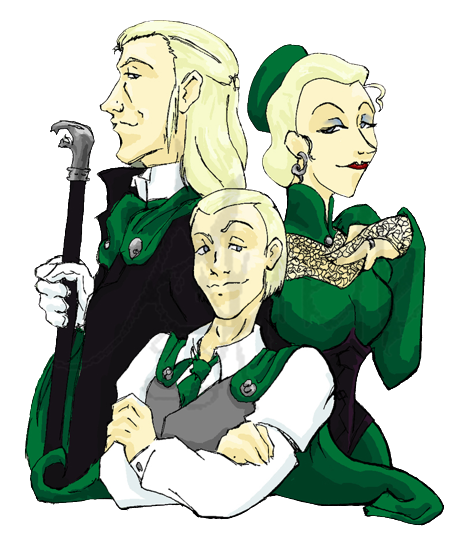

| The Potter family is a wizarding family from Godric’s Hollow in Devon, although the family originated in the small village of Stinchcombe in Gloucestershire.Potter is a not uncommon Muggle surname, and the family did not make the so-called ‘Sacred Twenty-Eight’ for this reason. James ans lily potter were some of the famous members of the family.Their son Harry Potter grew up to defeat Lord Voldemort. Later he married Ginny Weasley and they had three children. James Sirius Potter, Albus Severus Potter and Lily Luna Potter. |
| The Weasleys are considered one of the prominent wizarding families, although their lack of money and their sympathy for non-pure-blood wizards and even Muggles makes people like the Malfoys look down on them. They live in The Burrow, a ramshackle house of four or five stories “a little way outside” the village of Ottery St. Catchpole. Arthur and Molly weasely had 7 children. Bill weasely, Charlie Weasley, Percy Weasley,Fred and George Weasley(twins), Ronald Weasley and youngest of them was Ginny Weasley. |
|  | The Malfoy family is an old, aristocratic pure-blood wizarding family. They are one of the “Sacred Twenty-eight” pre-eminent pure-blood families listed in the Pure-Blood Directory published in the 1930s. Despite their promotion of pure-blood ideologies, the Malfoy family have been known to ingratiate themselves with non-magical society when it suits their interests. The Malfoys are one of the wealthiest wizarding families in Britain, but they have a reputation for being “slippery”. Over the centuries, members of the Malfoy family have been suspected of holding undue influence over the magical government. Current members include Lucius MAlfoy and his wife Narcissa malfoy. They both have a son Draco malfoy. Further draco and his wife Astoria Greengrass have a son Scorpious Malfoy. |
| An ancient elitist, pure-blood Wizarding family, the line of which extends back at least seven centuries. The line died out with the death of Sirius Black in 1996.Some famous names from the family are Sirius And Regulus Black. They are cousins with the three sisters Bellatrix Lestrange, Narcissa Malfoy and Andromeda Tonks. Andromeda had a daughter Nymphodora Tonks who was wife of Remus lupin. |
| The Dursley family is a Muggle family with which Harry Potter lives after being orphaned in 1981. Mrs. Dursley is Harry’s maternal aunt. The family consists of Vernon Dursley, his wife Petunia, their son Dudley, and Vernon’s sister, Marge |